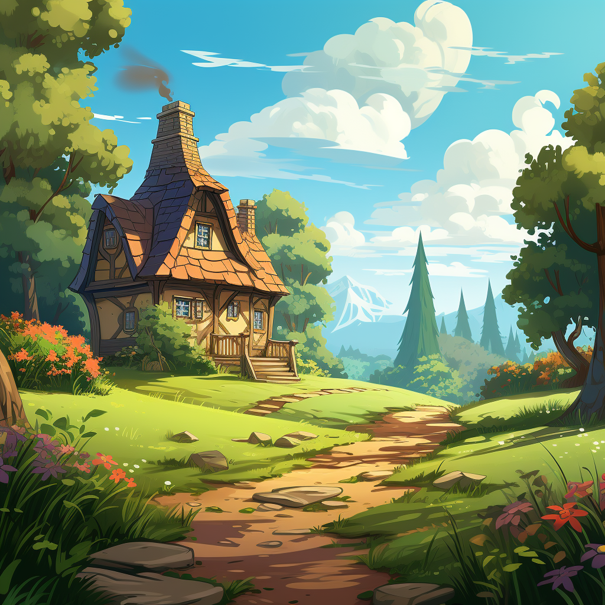

Il était une journée ensoleillée, deux frères et sœurs, Lily et Ben, partaient à l'aventure pour visiter la confortable maison de campagne de leurs grands-parents. Ils étaient ravis de passer du temps avec grand-mère et grand-père, surtout parce qu’ils avaient toujours des surprises amusantes qui les attendaient.


Alors qu’ils franchissaient la porte d’entrée, le doux arôme de quelque chose de délicieux emplit l’air. "Mmm, c'est quoi cette délicieuse odeur ?" » demanda Lily, son nez se contractant de curiosité.
"Ça sent quelque chose de sucré et savoureux", a ajouté Ben en se frottant le ventre affamé.
Leur grand-mère, avec un sourire chaleureux, les accueillit dans la cuisine où elle était en train de préparer quelque chose de spécial. "Bonjour mes petites chéries ! Je vous prépare des friandises tous les deux", dit-elle, les yeux pétillants de joie.
Lily et Ben rejoignirent avec impatience leur grand-mère au comptoir de la cuisine, prêts à l'aider. Ils virent des bols de farine, de beurre et d’œufs, mais il manquait quelque chose. "Grand-mère, où est le sucre ?" » demanda Ben en fronçant les sourcils de confusion.
"Ouais, grand-mère, comment peut-on faire des bonbons sans sucre ?" » intervint Lily, tout aussi perplexe.
Grand-mère rit doucement et attrapa une bouteille de sirop doré. "Ah, mes chéris, nous utilisons quelque chose d'aussi sucré, mais beaucoup plus sain que le sucre. Nous utilisons des dattes !"
Les yeux de Lily et Ben s'écarquillèrent de surprise. "Les dattes ? Mais comment peuvent-ils rendre les choses sucrées comme le sucre ?" » demanda Ben, sa curiosité piquée.
Grand-mère commença à expliquer en leur montrant les dattes dodues et collantes. "Les dattes sont un doux cadeau que la nature nous fait. Elles regorgent de sucres naturels et de nombreux nutriments comme des fibres, des vitamines et des minéraux. Elles ne sont pas seulement sucrées, elles sont aussi très saines !"
"Oh vraiment?" » s'exclama Lily, étonnée.
"Oui, en effet ! Les dattes sont riches en fibres, ce qui aide à garder notre ventre heureux et notre digestion douce. De plus, elles regorgent de vitamines et de minéraux comme le potassium, le magnésium et la vitamine B6, qui sont tous importants pour que notre corps reste forte et en bonne santé", expliqua grand-mère, les yeux pétillants de sagesse.
Avec enthousiasme, Lily et Ben regardèrent grand-mère couper les dattes en petits morceaux et les mélanger à la pâte. Ensemble, ils ont transformé la pâte en de délicieux biscuits et de jolis petits gâteaux.
Comme les friandises cuites au four, la cuisine se remplit du parfum irrésistible des produits fraîchement sortis du four. Lily et Ben avaient hâte de les goûter.
Lorsque le minuteur sonna, grand-mère sortit soigneusement les friandises dorées et les laissa refroidir sur le comptoir. Avec impatience, Lily et Ben en prirent chacun une bouchée.
"Mmm ! C'est tellement délicieux !" s'exclama Lily, son visage s'éclairant de joie.
"Et ils sont sucrés, tout comme le sucre !" ajouta Ben avec un grand sourire.
Leur grand-mère souriait fièrement. "Vous voyez, mes petits ? Les dattes ne sont pas seulement sucrées, mais elles rendent aussi nos gourmandises plus saines et encore plus savoureuses !"
À partir de ce jour, Lily et Ben ont appris à apprécier la douceur des dattes et à savourer de délicieuses friandises sans avoir besoin de sucre raffiné. Et chaque visite chez grand-mère et grand-père est devenue une aventure passionnante pleine de douces surprises et de délices savoureux, tout cela grâce aux pouvoirs magiques des dattes.

Vous avez terminé l'histoire!
C'est l'heure du Quiz !